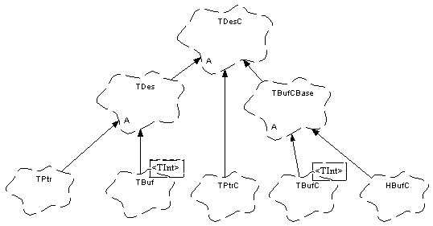

|
| |
The following diagram shows the relationship between the descriptor concrete classes and their abstract base classes.
The diagram uses the 16 bit variant types: TPtrC16, TPtr16, TBufC16<TInt>, TBuf16<TInt> and HBufC16, but the relationship is exactly the same for the 8 bit variants. The class names can also be replaced by the build independent types and the relationship remains valid.
The TBufCBase16 class is an implementation convenience and is not part of the public API.

Because descriptors are widely used (especially on the stack), the size of descriptor objects must be kept to a minimum. To help with this, no virtual functions are defined in order to avoid the overhead of a virtual function table pointer in each descriptor object.
As a consequence, the base classes have implicit knowledge of the classes derived from them.
Copyright ©2002 Symbian Ltd. 6.1-00174 |
|